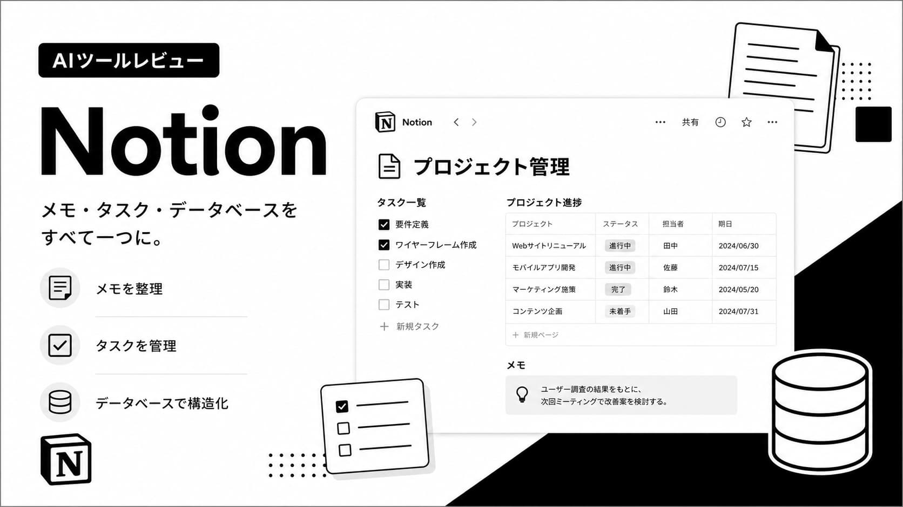

業務効率化・自動化Notion レビュー｜メモ・タスク・DBを一元管理するオールインワンツール
2026年5月 更新
メモアプリ・タスク管理・Wiki・データベースがひとつに集約されたオールインワン情報管理ツールがNotionです。個人から企業チームまで幅広く使われていますが、使いこなすまでに学習コストがかかるのが正直な筆者の印象です。
Notionとは？
Notionは2016年創業のアメリカ発SaaSです。ドキュメント・タスク・スプレッドシート・カレンダー・ナレッジベースをひとつのワークスペースで管理できます。
実際に使って良かった点
「バラバラだったメモ・タスク・資料がNotionひとつにまとまって、情報を探す時間が激減した。無料で使える範囲も広くて助かっている。」
特にフリーランスや副業ワーカーのプロジェクト管理に最適です。初期設定に時間がかかる分、一度構築すれば非常に強力なツールになります。
無料 vs Plusプランの違い
| 機能 | 無料プラン | Plusプラン（$10/月） |
|---|---|---|
| ページ・ブロック数 | 無制限 | 無制限 |
| ゲスト招待 | 10名まで | 100名まで |
| ファイルアップロード | 5MBまで | 無制限 |
| バージョン履歴 | 7日間 | 30日間 |
| Notion AI | 20回まで | ✅ 無制限（別途$10） |
こんな人におすすめ
✅ 情報をまとめて管理したい人 ✅ フリーランス・副業ワーカー ✅ チームでドキュメント共有したい人 ⚠️ 設定に時間をかけられる人向け